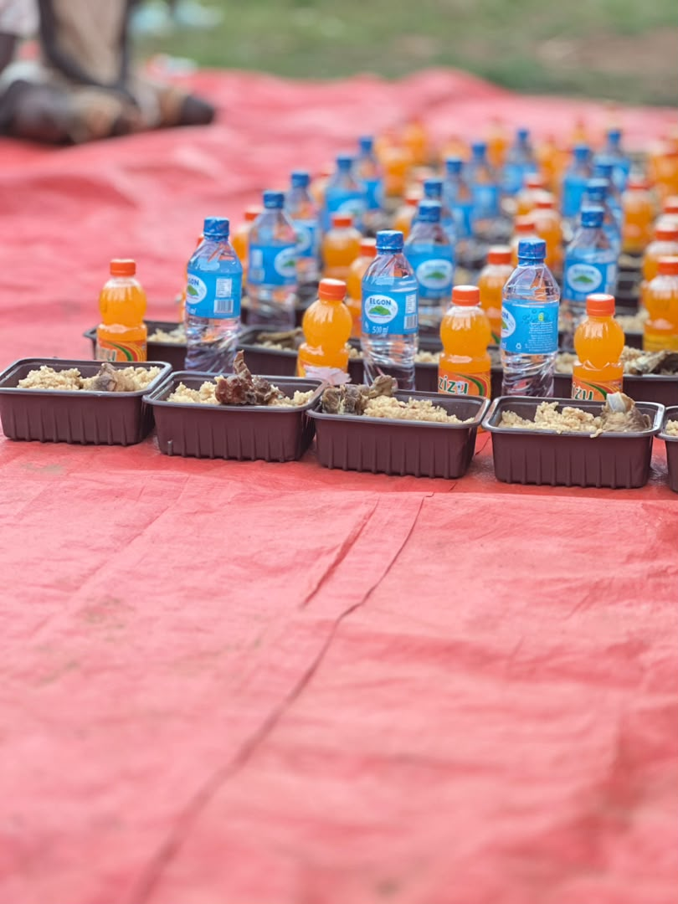
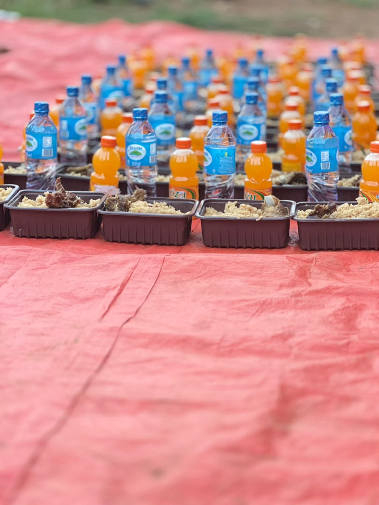
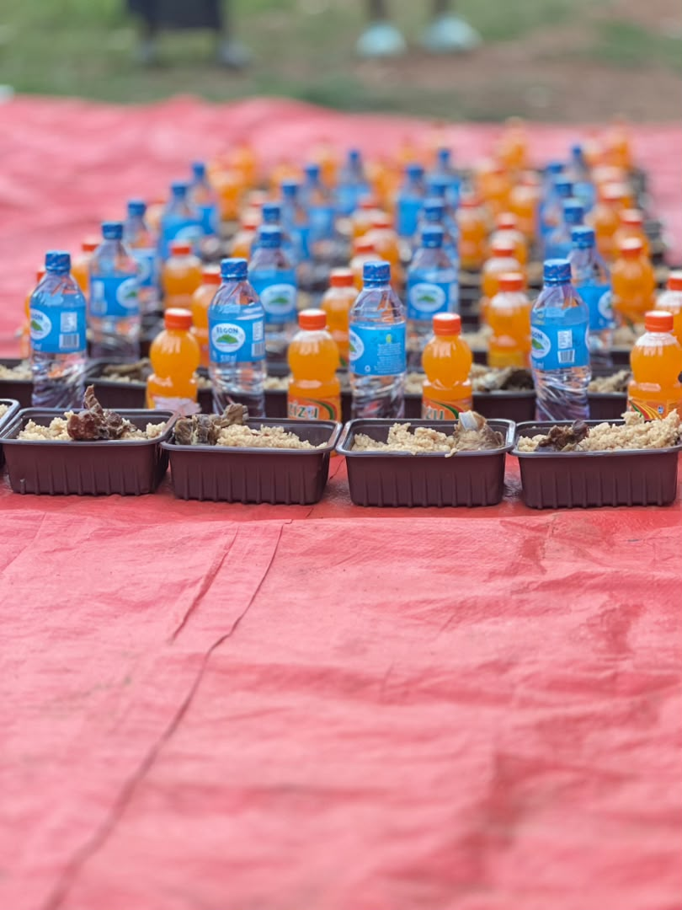

Shifa Biryeli
CEO & FounderLeading the foundation’s mission to support education, health, livelihoods and stronger communities.
SHIFA-BIRY FOUNDATION · MBALE, UGANDA
Meet the people and purpose behind our foundation.
Leading the foundation’s mission to support education, health, livelihoods and stronger communities.
Photographs from the foundation’s community activities.


